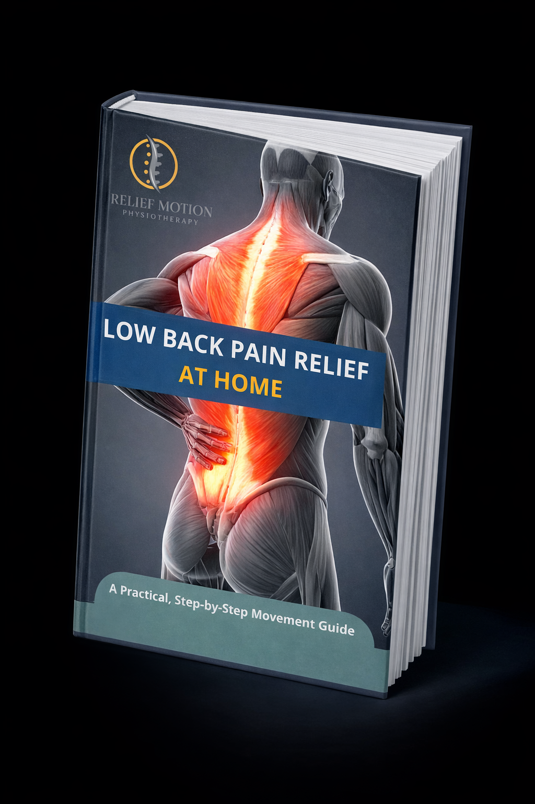

Back Care Ebook (Free PDF)
A simple, patient-friendly guide to understanding back pain and practicing safer daily habits. Download and keep it for reference.
Download PDFExpert advice, recovery stories, and tips for managing pain from our specialist team.
The critical window for neuroplasticity opens immediately after a stroke. Discover why beginning targeted rehabilitation exercises within the first month drastically improves long-term mobility and independence outcomes for patients.
Read Article
A simple, patient-friendly guide to understanding back pain and practicing safer daily habits. Download and keep it for reference.
Download PDFNot all lower back pain is sciatica. Learn the key symptoms that distinguish true sciatic nerve compression from muscular strain, and what treatments work best.
Read ArticleFalls are a leading cause of injury for seniors. Integrating these five simple balance and strengthening exercises into a daily routine can significantly reduce risk.
Read ArticleA week-by-week guide to recovering from a total knee arthroplasty (TKA), from the day you return home to regaining full range of motion.
Read ArticleOur specialists are available for home visits across Lagos.